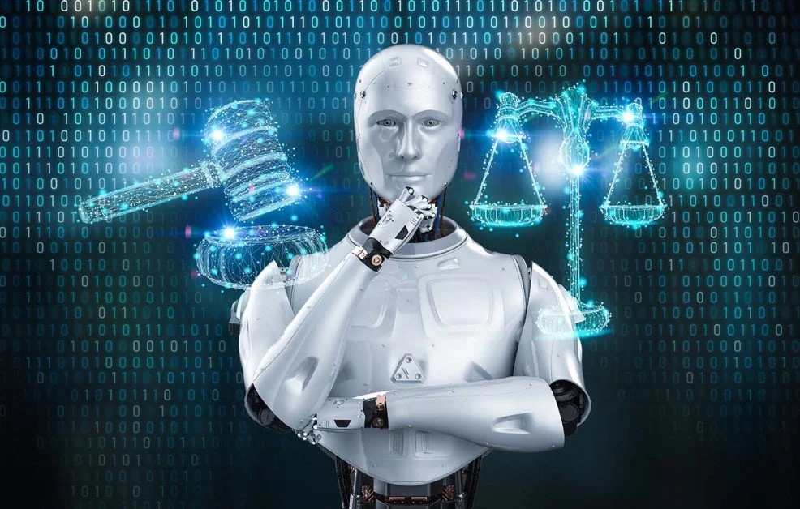

Rapid Development of Technology
Accelerated Technological Innovations
The rapid development of technology, especially in the field of artificial intelligence (AI) and machine learning (ML), has been one of the defining characteristics of our era. Technological advances have been driven by a series of factors, including progress in the field of computers and data processing, as well as the increasing interest and investment in research and development of emerging technologies. An important aspect of the rapid development of technology is its impact on innovation and progress in various fields. AI and ML technologies have had a significant impact in areas such as medicine, transportation, finance, and education, facilitating the development of new and innovative solutions for complex and challenging problems. For example, in medicine, AI algorithms are used to diagnose diseases, identify personalized treatments, and analyze clinical data to identify patterns and trends. Additionally, the rapid development of technology has led to the emergence of new paradigms and business models that have fundamentally changed how the economy and society function. For instance, the digital economy and e-commerce platforms have experienced exponential growth, allowing consumers to access products and services in a more efficient and convenient manner. Furthermore, blockchain technologies and cryptography have opened new opportunities in the field of finance and online transactions, facilitating the exchange of values and commercial activities without intermediaries. In conclusion, the rapid development of technology has been a powerful driver of innovation and progress in our era, bringing a series of benefits and opportunities in various fields. These technologies have fundamentally changed how we live, work, and interact, opening new possibilities and challenges in an increasingly digital and interconnected world.
Impact on society and the economy
The rapid development of technology has had a significant impact on society and the economy, influencing the way we live, work, and interact in an ever-changing digital world. These technologies have opened up new opportunities and challenges, reshaping existing paradigms and catalyzing innovation and progress in various fields. An important aspect of the impact on society is the transformation of how we communicate and interact with one another. Digital communication technologies, such as social media and messaging platforms, have facilitated connection and interaction among people globally, enabling the exchange of information and ideas in real time and creating virtual communities and complex social networks. In addition, the rapid development of technology has changed the way we work and conduct economic activities. The digitization and automation of production and service processes have led to increased efficiency and productivity, allowing companies to optimize their operations and improve their financial performance. For example, in industry, robotization and automation of the production line have led to increased efficiency and quality, while simultaneously reducing production costs. In conclusion, the rapid development of technology has had a profound impact on society and the economy, reshaping the way we live, work, and interact in an ever-changing digital world. These technologies have opened up new opportunities and challenges, influencing the way we conduct business, communicate, and organize our lives in the digital age.
Regulation and Ethics
In the context of rapid technological development, regulation and ethics are critical aspects that must be considered to ensure the responsible and ethical use of emerging technologies, such as artificial intelligence (AI) and machine learning (ML). These technologies can have a significant impact on society and the economy, and regulations and ethical standards are essential to protect individual rights and ensure their use for the common good. An important aspect of regulation is the establishment of an appropriate legal and institutional framework for the use of AI and ML technologies. These regulations can include directives regarding data protection, algorithmic transparency, legal accountability, and protection of individual rights. For example, in the European Union, the General Data Protection Regulation (GDPR) sets strict rules for the collection and processing of personal data, protecting privacy and confidentiality. Additionally, the development and implementation of ethical standards for the use of AI and ML technologies are essential to ensure that these technologies are used responsibly and in accordance with human rights principles and social justice. These ethical standards can include principles such as transparency, fairness, accountability, and inclusion, which should ensure that technologies are developed and used in a way that promotes collective well-being and minimizes potential risks and harms. Furthermore, collaboration between governments, non-governmental organizations, and the private sector is essential for developing and implementing the necessary regulations and ethical standards for the responsible use of AI and ML technologies. This collaboration can involve developing partnerships and strategic alliances between different stakeholders, as well as creating mechanisms for consultation and dialogue to address concerns and common priorities. In conclusion, regulation and ethics are critical aspects that must be considered in the context of rapid technological development, such as AI和ML. It is important that regulations and ethical standards are designed and implemented appropriately to ensure that these technologies are used responsibly and for the common good, while protecting individual rightsand promoting justiceand inclusion in society.

Datcu Daniel-Alexandru
Version: 2.0
Copyright © 2024